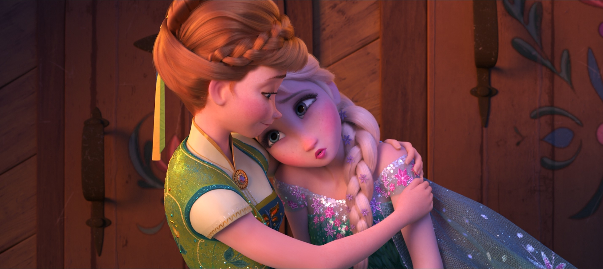

人物关系


📖 这一页讲什么
安娜的一生被几段关系塑造：姐姐给了她最深的羁绊与最大的困惑，克里斯托夫给了她真诚的爱，雪宝是她的童真伙伴，汉斯给了她最痛的教训。这一页梳理她关系网里的每一位关键人物。（她与艾莎的深度专章见「安娜与艾莎」小章节。）
❄️ 姐姐艾莎：一生最坚定的纽带
艾莎是安娜一生最坚定的纽带。她从不放弃姐姐，即使在最黑暗的时刻也选择「做对的事」。她的爱不是占有，而是成全——支持艾莎成为第五灵、守护森林。从童年无数次敲门「Do you want to build a snowman?」，到加冕日的争执，到北山寻姐，到为姐姐挡剑冰封，再到F2中各自为王——安娜与艾莎的关系是全系列最核心的情感线。
🦌 克里斯托夫：从雇佣到伴侣
采冰人、非王子，性格高大强壮、粗犷少言、外硬内柔。幼年由山地巨魔家族抚养，视其为家人。服装灵感来自北极原住民萨米人传统服饰。第一部中他受雇带安娜上山，途中被她的执着打动；结尾被安娜任命为「official Arendelle ice master and deliverer」。第二部中他计划向安娜求婚却总被冒险打断，在《Lost in the Woods》中以80年代摇滚风格唱出对安娜的依赖与迷失。最终他在阿伦黛尔城堡向安娜正式求婚，安娜接受。二人互补：安娜冲动直率，克里斯托夫稳重务实。
⛄ 雪宝：童真的伙伴
雪宝是艾莎童年与安娜玩雪时无意创造的雪人。安娜像姐姐一样照顾雪宝，雪宝的童真也常常帮她看见最简单的真理。雪宝的名言「Love is putting someone else's needs before yours」（爱就是把别人的需求放在自己之前），正是安娜一生行事的写照。在F2中，雪宝因艾莎的冰封而融化，安娜的悲痛成为她唱出《The Next Right Thing》的契机——雪宝的「消失」让安娜真正理解了「失去」，也让她的「做下一件对的事」有了更深刻的意义。
⚔️ 汉斯：初恋幻象与信任的教训
汉斯是安娜的初恋幻象。他利用她的孤独与天真，最终以「If only somebody loved you」（要是有人爱你就好了）伤害她。这段经历让安娜更懂得区分表演与真心。汉斯的背叛是安娜成长的关键转折点——她曾经相信「一见钟情」和「真爱之吻」，但汉斯的背叛让她明白：爱不是甜言蜜语，而是行动与牺牲。讽刺的是，正是汉斯的背叛，让安娜最终理解了「真爱之举」的真正含义——不是被爱，而是去爱。
👑 父母：缺席的爱
阿格纳尔与伊杜娜是安娜的父母。与艾莎不同，安娜对父母的记忆更多是「缺席」——父母大部分时间都在照顾艾莎、处理魔法的问题，安娜常常被忽视。父母出海遇难后，安娜成为王国里最孤独的公主。但在F2中，安娜发现了父母的真实旅程——他们不是去参加婚礼，而是去寻找艾莎魔法的答案。这个发现让安娜理解了父母的「缺席」不是不爱，而是「太爱」——他们为了保护艾莎，不得不牺牲与安娜的相处时间。安娜最终选择摧毁祖父的水坝，也是对父母「纠正错误」的遗志的继承。
🌿 其他重要关系
斯文（Sven）：克里斯托夫的驯鹿，也是安娜的朋友。斯文虽然不会说话，但常常用行动表达对安娜的支持。
马蒂亚斯将军（General Mattias）：F2中被困在魔法森林30多年的阿伦黛尔将军。安娜用真诚说服他一起摧毁水坝，他成为安娜执政后的重要支持者。
巨魔帕比（Pabbie）：山地巨魔首领，曾为安娜抹去魔法记忆。他是安娜与艾莎的「精神导师」，他的警告「Fear will be your enemy」是全系列的核心命题。
🔄 关系动力学：从「被忽视」到「连接者」
安娜的所有关系都遵循同一个模式：被忽视 → 主动连接 → 用真诚赢得信任。童年被姐姐忽视，她用敲门来连接；被父母忽视，她用乐观来连接；被汉斯背叛，她用克里斯托夫的真诚来重新连接。安娜的核心能力不是魔法，而是「连接」——她能与任何人（或雪人、或驯鹿、或敌对阵营的士兵）建立真诚的关系。这也是她最终成为女王的原因：一个好的领导者，不是最强大的人，而是最能连接众人的人。

